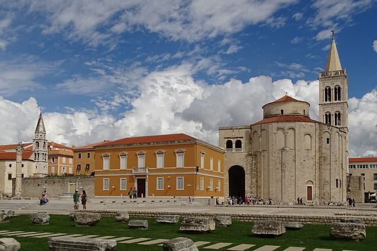

Zadar is an ancient city, built in the center of the Croatian Adriatic, full of historical and cultural monuments. It is three thousand years old, a city of old, tumultuous and dynamic history, often destructed, looted, devastated, every time emerging from the ruins stronger, richer and more beautiful. Zadar appeared for the first time in history in the 4th century B.C. as a settlement of the Illyrian tribe of Liburnians – the name Jader was mentioned, and through history it changed into Idassa (Greek source), Jadera (Roman source), Diadora, Zara (during Venetian rule and later Italian) up to today’s name of Zadar. Here is a Zadar's Tourist Board Website
